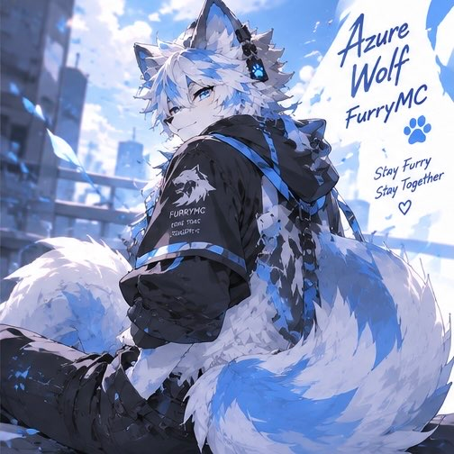

TRẠNG THÁI DISCORDĐang tải hoạt động...Kết nối qua Lanyard

AzureWolf VNDiscord profile
Đang hoạt độngSói con bị khìng !
XIN CHÀO, MÌNH LÀ

AzureWolf
FurryMC Owner • Developer • Designer
Đam mê Minecraft, phát triển FurryMC và tạo ra những trải nghiệm thú vị hơn cho cộng đồng. Luôn học hỏi, sáng tạo và không ngừng tiến bước.
Việt Nam
Furry Community
Minecraft
Plugin Developer
UI / Design
Always Learning
“Cùng nhau xây dựng một cộng đồng Furry thật tuyệt vời!”
— AzureWolf
20+Dự án & ý tưởngPlugin / Web / Design
10–15Người chơi mục tiêuFurryMC Survival
26.2Paper ServerJava + Bedrock
LuônHướng tới cộng đồngFurry Fursuit · Owner MC
KHÁM PHÁ THẾ GIỚI AZUREWOLF
02 · DỰ ÁN NỔI BẬT
FurryMC — thế giới của chúng mình.
Một server sinh tồn khám phá, nơi người chơi có thể xây dựng vùng đất riêng và cùng phát triển một cộng đồng thân thiện.
MINECRAFT COMMUNITY SERVER
FurryMC
Khám phá, sinh tồn và xây dựng vùng đất của riêng bạn. Hỗ trợ người chơi Java và Bedrock.
Đang kiểm tra máy chủ...
Thế giới lớn, nhiều khu vực và nội dung để khám phá.
Tạo vùng đất, bảo vệ công trình và xây dựng cộng đồng riêng.
Hệ thống vật phẩm, mob, kỹ năng và giao diện được chăm chút.
GÓC NHỎ DỄ THƯƠNG
Nuôi tôi được chứ?
Nếu bạn thích những gì mình đang làm, một ly nước nhỏ cũng đủ tiếp sức để mình tiếp tục chăm chút FurryMC và tạo thêm nhiều điều mới.
“Mỗi sự ủng hộ đều là một cái high-five dành cho những ý tưởng sắp thành hình.”— AzureWolf